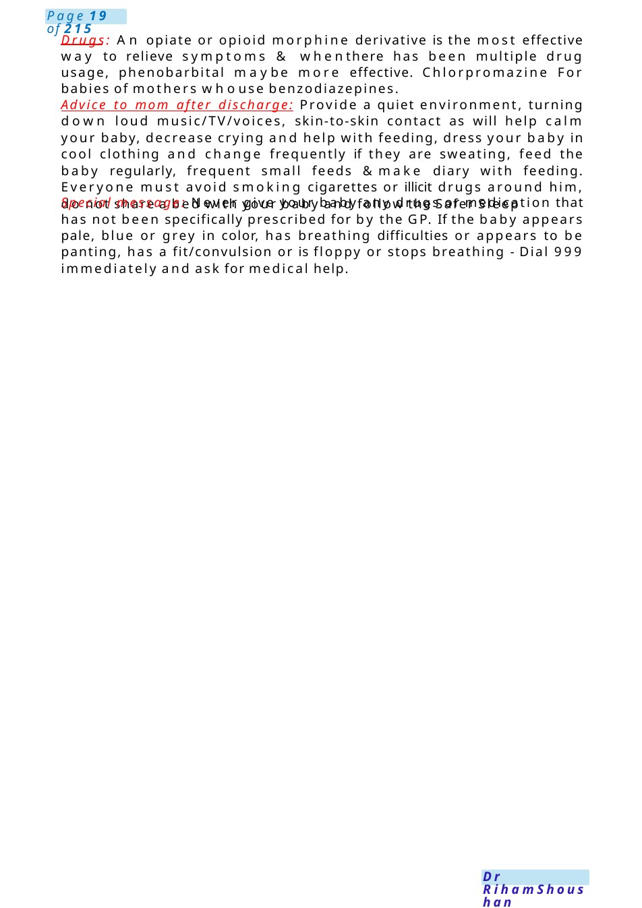

Neonatal Abstinence Syndrome
Def: medication, tobacco and alcohol) taken in pregnancy will pass through the placenta and will be absorbed by your baby. If, during the pregnancy, the mother used any prescribed medication or illicit drugs that can cause physical dependency then the baby may become dependent on this medication too. Following delivery, when the umbilical cord has been cut, the supply of drugs to the baby suddenly stops and the baby mayshow signs of physical withdrawal. Signs and symptoms: variable in severity from mild to severe, Acontinuous high-pitched cry • Fast breathing (tachypnoea) • Irritability and restlessness and scrat…
Scenario Summary
Def: medication, tobacco and alcohol) taken in pregnancy will pass through the placenta and will be absorbed by your baby. If, during the pregnancy, the mother used any prescribed medication or illicit drugs that can cause physical dependency then the baby may become dependent on this medication too. Following delivery, when the umbilical cord has been cut, the supply of drugs to the baby suddenly stops and the baby mayshow signs of physical withdrawal. Signs and symptoms: variable in severity from mild to severe, Acontinuous high-pitched cry • Fast breathing (tachypnoea) • Irritability and restlessness and scrat…
Full Original Scenario

Neonatal Abstinence Syndrome
Def: medication, tobacco and alcohol) taken in pregnancy will pass through the placenta and will be absorbed by your baby. If, during the pregnancy, the mother used any prescribed medication or illicit drugs that can cause physical dependency then the baby may become dependent on this medication too. Following delivery, when the umbilical cord has been cut, the supply of drugs to the baby suddenly stops and the baby mayshow signs of physical withdrawal.
Signs and symptoms: variable in severity from mild to severe, Acontinuous high-pitched cry • Fast breathing (tachypnoea) • Irritability and restlessness and scratching of their faces • Shaking (tremor) of arms and legs whether disturbed or resting • Increased muscle tone where the limbs feel very stiff
- Feeding difficulties – coordination of sucking and swallowing, frantic sucking • Excessive wakefulness – not settling or sleeping after a feed • Sickness / vomiting • Diarrhoea with sore buttocks
- Fever • Sweating • Excessive sneezing, yawning, hiccups • Less commonly fits (convulsions)
Management: antenatally, check maternal hepatitis B, hepatitis C and HIV status and decide on management plan for baby. During labor, revise notes regarding the drug dosage &rote of administration and last dose taken. involve the neonatal team. postnatally, do not give naloxone (can exacerbate withdrawal symptoms). encouragement of skin-to-skin contact & initiation of early breastfeeding, Admit to NNU only if there are clinical indications, keep babies who are not withdrawing, feeding well and have no child protection issues with their mothers in postnatal ward, if symptomatic start medications according to the drug causing the condition
SUBSEQUENT MANAGEMENT: maintain normal temperature • reduce hyperactivity • reduce excessive crying • reduce motor instability • ensure adequate weight gain and sleep pattern • identify significant withdrawal requiring pharmacological treatment, review daily, start pharmacological treatment (after other causes excluded) if there is: recurrent vomiting • profuse watery diarrhea • poor feeding requiring tube feeds • inconsolability after 2 consecutive feeds • seizures.

Drugs: An opiate or opioid morphine derivative is the most effective way to relieve symptoms & whenthere has been multiple drug usage, phenobarbital maybe more effective. Chlorpromazine For babies of mothers whouse benzodiazepines.
Advice to mom after discharge: Provide a quiet environment, turning down loud music/TV/voices, skin-to-skin contact as will help calm your baby, decrease crying and help with feeding, dress your baby in cool clothing and change frequently if they are sweating, feed the baby regularly, frequent small feeds &make diary with feeding. Everyone must avoid smoking cigarettes or illicit drugs around him, do not share a bed with your baby and follow the Safer Sleep
Special message: Never give your baby any drugs or medication that has not been specifically prescribed for by the GP. If the baby appears pale, blue or grey in color, has breathing difficulties or appears to be panting, has a fit/convulsion or is floppy or stops breathing - Dial 999 immediately and ask for medical help.

DMSA,recurrent UTI&Unilateral Hydronephrosis
Examscenarios:
1. Infant with UTI. Discuss the results of the investigations: US/MCUG/DMSA. Explain the follow-up including BP, review etc. (2019) (information given &consent).
2. Child has recurrent UTI on trimethoprim DAMSAshow 30 %scaring. Explain the result to mother. # Mother doesn’t knowwhat is DMSA# What is the TTT?# Will you give him Abx to prevent further damage? # Mother asked any dipstick should I use to check if there is UTI? # Will he get Renal Failure
3. talk to mother of ...aged 6 h, his antenatal scan show that she has unilateral dilatation of renal pelvis. Explain to her the finding and what will do in the future.
Explanation:
1. if for unilateral dilation, point to your loin angle while explaining, actually before he is born his scan showed abnormalities in his pee system, anyone explains it to you? Here in our body, wehave 2 beanlike structure called kidneys which they are considered the factory of pee, then the pee goes down though 2 pee canals named ureters, then to the pee bag which collect the pee &called urinary bladder. Unfortunately ....has dilatation in one side at this area.
Cause: unknown, but maybe someobstruction in his pee tubes, or the valve between the tubes &pee bag is loose allowing pee to go in opposite direction upwards or maybe unknown reason.
Management:wewill start antibug for 4-6 weeksthen wewill dojelly scan to look for the abnormality if no, we will stop the anti-bug for 2-3 m&repeat the jelly scan, whoever if at 4-6 wthere is abnormality, wewill consult the pee doctor.
Whyantibiotic needed? Because this widening area leads to accumulation of pee which will be a good environment for bugs, so weneed to prevent more growth of these bugs &also to prevent them from reaching the kidneys if the pee is Gowingback in case of loose valve. Anydipstick should I use to check if there is UTI?yes, you can check it at home. once a week&we will not do this scan except after this UTI is cleared by 6 m.